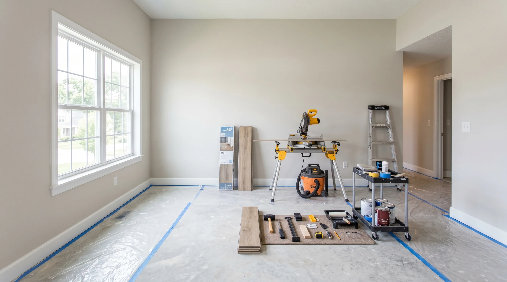

Cleaner customer perception
Repair the visible details customers notice first: doors, walls, trim, fixtures, restrooms, and entry points.
Retail repairs have a different standard: customer-facing work must look sharp, happen fast, and avoid disrupting sales. ELF Commercial handles repairs, refreshes, fixtures, and after-hours punch work for stores across DFW.
For retail maintenance, success is measured by sales-floor presentation, clear documentation, minimal interruption, and whether the permanent fix prevents a repeat ticket.
Repair the visible details customers notice first: doors, walls, trim, fixtures, restrooms, and entry points.
Plan noisy, dusty, or blocked-area work after hours or in low-traffic windows.
Give district and ownership teams the photos, notes, and sign-offs they need.
Final retail maintenance scope depends on access rules, operating hours, material availability, approval limits, hidden conditions, and whether a licensed specialist or permit path is needed.
Retail maintenance is judged by customer perception, sales-floor disruption, fixture readiness, and whether the work can happen around trading hours without turning the store into a jobsite.
Prioritize entry doors, wall corners, fitting rooms, restrooms, checkout areas, display fixtures, and backroom access because shoppers notice damage before they read signage.
Separate quick open-hours work from noisy, dusty, paint, tile, or blocked-aisle repairs so managers can protect revenue and staff flow.
Photo notes should show the finished customer-facing surface, fixture alignment, touch-up color, and any recommended follow-up before district review.
This page is intentionally focused on retail maintenance, so the operating notes, triage cues, and closeout expectations are different from the rest of the commercial library.
Entry doors, fixture alignment, checkout walls, fitting rooms, restrooms, and corner damage affect trust before a customer speaks to staff.
Noisy, dusty, paint, tile, or blocked-aisle work belongs in a planned window that protects sales and staff flow.
Closeout should show the finished customer-facing surface and any follow-up item before a district manager has to ask.
Classify the business, urgency, access window, scope, and location count. The console builds a response priority, planning range, downtime note, and dispatch-ready brief.
Commercial buyers do not buy repairs. They buy open doors, safer spaces, cleaner claims, and fewer operational interruptions.
The workflow below is specific to retail maintenance: it names the first signal, the operating risk, the repair action, and the closeout note a manager actually needs.
Separate customer-facing issues from back-of-house items.
Plan dust, noise, access, and safety barriers around open hours.
Complete visible repairs with finish standards in mind.
Send photos and notes for manager, district, or landlord review.
These internal links point to adjacent commercial intents without repeating the full service library on every page.
Often yes, but customer-facing, noisy, dusty, or blocked-access work is usually better after hours. ELF helps separate the right tasks.
Yes. ELF can assemble and install many fixtures, shelves, displays, and small equipment when the scope does not require a licensed specialist.
Yes. Multi-store route work can be grouped by city, urgency, and access window.
 CommercialRestaurant Repairs & Build-Out Support in DFW | ELF Commercial
CommercialRestaurant Repairs & Build-Out Support in DFW | ELF CommercialRestaurant repair, refresh, and punch work across DFW: front-of-house, back-of-house, restrooms, tile, doors, drywall, paint, and after-hours service.
 CommercialCommercial Drywall & Painting in DFW | ELF Commercial
CommercialCommercial Drywall & Painting in DFW | ELF CommercialCommercial drywall repair, paint touch-ups, wall refreshes, patch-to-paint closeout, trim, corner damage, and after-hours finish work across DFW.

Property ProsMake-Ready Turnover Services in DFW | Rent-Ready RepairsMake-ready and rent-ready turnover services across DFW: drywall, paint, caulk, doors, fixtures, flooring touch-ups, tile repair, punch lists, access notes, and vacancy-focused scheduling.
Case StudyDallas Commercial Office Repair Case Study | ELF Home ServicesA Dallas commercial office repair case study covering after-hours access, drywall patching, paint match, dust control, safety notes, and closeout documentation.